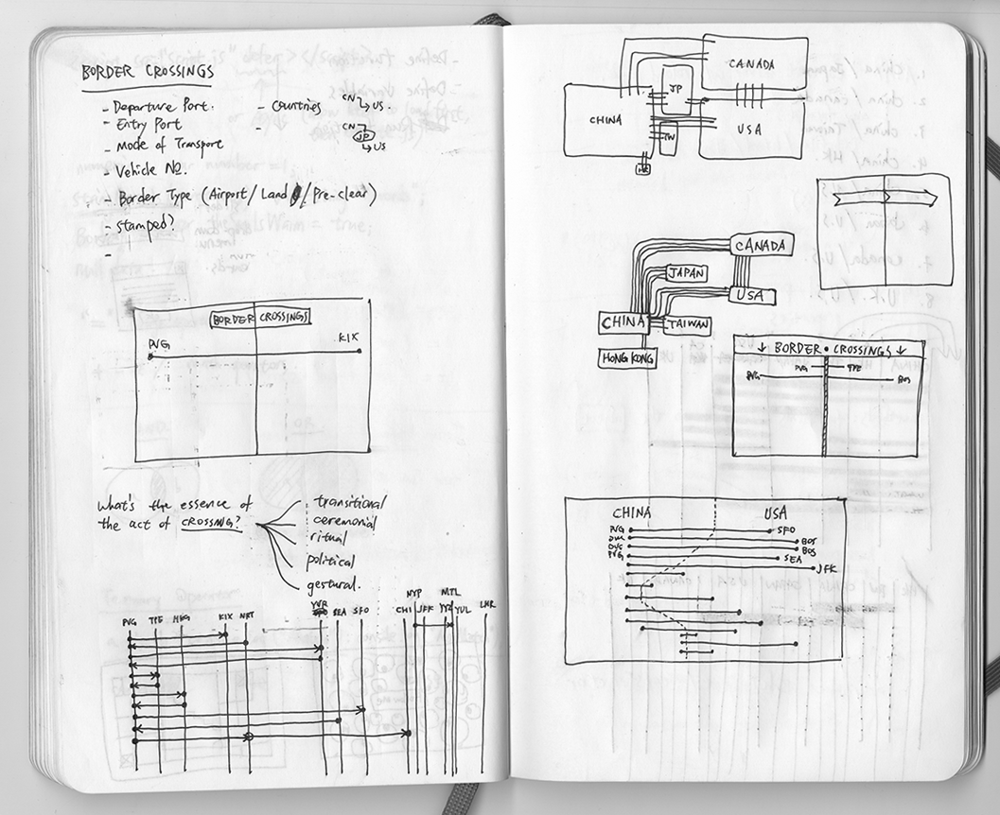
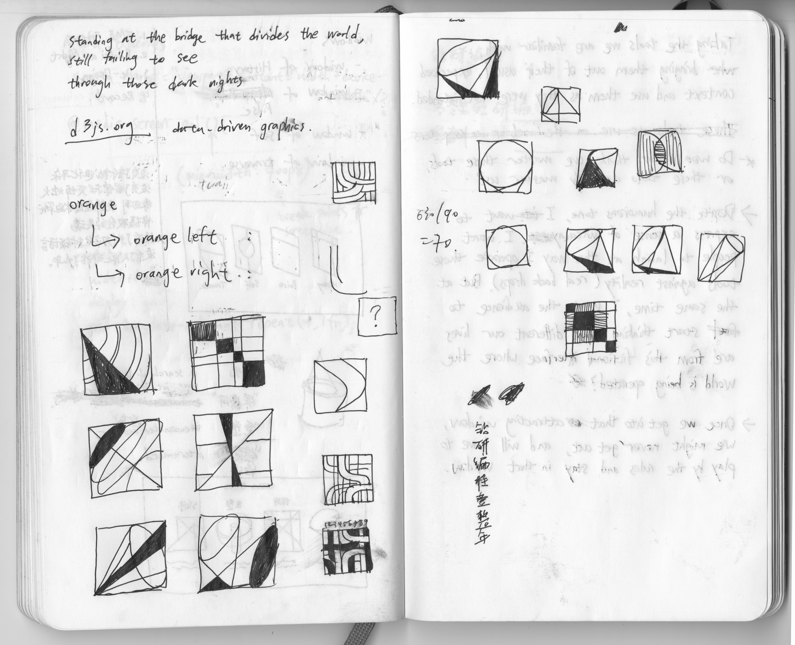

The journey of my web design learning: How each project came to fruition, and some of my personal notes along the way.
With the styling lyrics project for Andrew Bird's ode to Chicago “Pulaski at Night”. I immediately thought of using the iconic grid blocks in Chicago as a foundation structure for the page. However I removed most hints to the city grid from the end product, leaving only each line of the song as a super long block, together spanning from top to bottom of the page. The scrolling motion echoes the act of a person having to travel all the way across a city, in order to reach somewhere, or someone.
Fun Fact: Located at 4000W on the grid, Chicago's Pulaski Road straddles north from Wilmette Avenue south to Lincoln Highway. Its total length is a staggering 39.3 miles.
It was an enjoyable process to learn how to bring grid as a designing tool into the web production process. I have always loved tweaking details in my work and introducing order and structure. CSS grid is an amazing tool for me, as it makes the workflow of building a page from scratch extremely visual.
I find that setting up a grid structure table ahead is extremely helpful when it comes to time to assign elements into each grid cell.
Finished poster with the grid seen from Chrome's inspector.
This quick interactive sketch was a double play on the word “Follow”. We are being followed everyday: Both physically with our locations being shared to online services; and metaphorically with our internet profiles being seen by the mass. Maintaining a “Follower base” actually has become a goal many people pursue rather than something to be feared of. Taking hints from the UI language of Instagram, I designed this page to be a reminder of how ridiculous our obsession with followers is. Making the numbers of followers out of context and intangible offers the viewer a chance to question the way we evaluate popularity. This also serves as a timer counting down — what would happen when your follower number reaches zero eventually? Is that a good thing or a bad thing?
Traveling across international borders is an activity I frequently take on, especially since I moved from China to the US in 2013. For most people, these trips are often just a mundane routine they have to endure. But for me, my love for travelling and aviation helped me maintain a detailed record of my trips. Using these data points, what patterns can be revealed? Most of these border crossings actually took place in an airport, where there is no physical border line to cross. What does the “virtualization” of borders tell us about our geopolitical status-quo? I find myself extremly lucky and privileged to be able to make most of my crossings inside an airport, compared to someone scrambling for their life trying to make it into another “promised land”.
Path of all of my flights
Early sketches of some possible data-visualizing forms.
A mockup for an ideal functioning version of my border crossing records.
Finally at the end of my intense yet fruitful 1-month web design learning, I wanted my final site to be a combination of my many interests and skillsets. I didn't just want to make another portfolio-looking site. Instead I built this site in anticipation for people to view the work included here a story or poetry, and hopefully trigger their own personal thoughts and imaginations.
Sketches for the four animated “windows” that greet visitors on the home page.
“你仍然是坐在窗子以内的，不是火车的窗子，汽车的窗子，就是客栈逆旅的窗子，再不然就是你自己无形中习惯的窗子，把你搁在里面。”
“Yet you still sit inside a window. Be it the window on a train, the window on a car, the window inside a lodge, or the window that you unconciously constructed for yourself and resides in.”